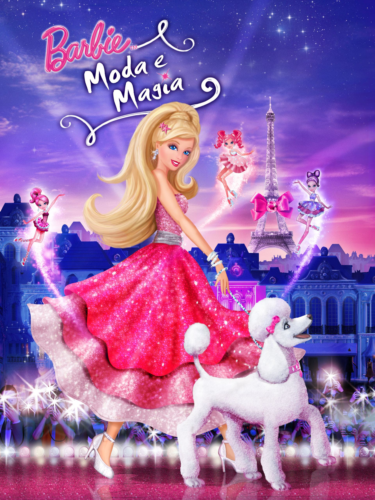

Barbie: Moda e Magia
 |
 |  |
Creio que todos nós já vimos um filme da Barbie e ficamos completamente apaixonados por ele, comigo não foi muito diferente. Tudo começou com o dia que eu recebi o dvd para este filme e a partir dai vi-o enumeras vezes, sem nunca me cansar.
Todas as vezes que eu vi este filme ficava sempre impressionada com a beleza e encanto que as roupas feitas pela Barbie tinham. O exagero de brilhos e purpurinas, as combinações de cores, mais a magia que as pequenas fadas traziam para os vestidos, tudo isso deixava-me extremamente encantada e maravilhada.
Eu sempre gostei de moda e de criar roupa, tanto que o meu maior sonho de criança era me tornar uma estilista. Acredito que a maior influencia para essa minha obsessão pelo mundo da moda foi a minha mãe. Ela trabalha como costureira e muitas vezes fez roupa para mim com base naquilo que eu lhe pedia. Eu era a "modelo" dela, como eu lhe costumava chamar.
Este filme inspirou-me a ter confiança comigo mesma e quem eu sou, não ter vergonha de vestir as roupas que eu gosto, e principalmente, acreditar nos meus sonhos e naquilo que eu acredito. Posso não ter me tornado uma estilista como eu tanto sonhava, mas creio que o meu eu de infância estaria orgulhosa do quanto eu cresci e da pessoa em que me estou a tornar.